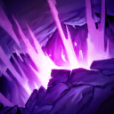
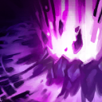

起手裝備
 幽魂之鐮
幽魂之鐮

視界專注取代盧登服務遠距命中，接寶珠、帽子、死墓；魔力鞋線仍獨立於四件購買裝，低收入不強求帽子提早。 五成裝為四件購買裝＋進化任務裝，鞋獨立；三級鞋按經濟補，不把外站附魔搬進本站。


五件成裝與鞋子分開列示；起手與核心是購買路線，不是額外佔用的成裝欄位。鞋子完成時機仍依對線壓力與回城金錢調整。


保留先發制人（本站id empowerment）、凌虐、鎖鏈突擊、殭屍守衛及超然；凌虐5秒更適合Q緩速。


保留閃現＋治療照顧雙人線；只有選角改虛弱、點燃或光盾時才執行相關連招步驟，原條件提示保留。
加點優先：Q > W > E
Q > W > E；主Q遠距壓力，W兩段接被動，E保反開不能只拿來補傷害。
技能命中會附加結構毀滅，疊滿三層時造成大量真實傷害；普攻可以刷新標記持續時間。
發射電漿彈造成魔法傷害與緩速，命中、到達終點或再次施放時會向左右分裂。

在地面撕開裂痕造成一次傷害，短暫延遲後再次爆發，是清線與疊被動的主要技能。

引爆指定區域造成魔法傷害與擊飛；在自身附近施放時也能把貼近的敵人擊退。
引導可控制方向的射線，持續造成傷害與緩速；已疊滿解構的研究目標會改為承受真實傷害。
大絕引導會被控制中斷，先疊分解再開；修掉預設治療卻無條件要求屏障的後期敘述。
1技斜向射出 → 再次施放提前分裂 → 2技接兩段傷害 → 保持後排距離
利用側向分裂繞過兵線並延長有效距離；一技緩速命中後二技更容易吃滿兩段。
3技擊飛目標 → 2技鋪在落點 → 1技緩速補層數 → 4技引導真傷射線
三技命中後立刻放二技，擊飛與緩速可確保裂痕兩段命中；疊滿解構再開大絕。
3技近身擊退 → 1技緩速追擊者 → 2技封鎖路線 → 光盾吸收爆發（改帶時才使用） → 退回射手與前排後方
三技是最重要的自保資源，面對突進陣容時保留到敵人位移落地後再使用。 本頁預設為閃現＋治療；本連招的光盾僅限選角時將治療改帶光盾且技能可用時使用。維持預設配置時略過該步。
分裂電漿命中、到達終點或再次施放時會向左右分裂。從側面斜射能繞過兵線並讓敵人更難預判。
每次技能命中都會附加結構毀滅，三層後造成真實傷害；普攻可以刷新標記時間，長戰中不要忽略安全普攻。
生化射線引導期間容易被控制或突進中斷。等敵方關鍵技能交出、或由隊友先控制後再施放。
以斜角分裂電漿繞過士兵消耗敵方下路，命中緩速後接虛空裂痕兩段傷害。反物質瓦解是唯一穩定硬控與自保手段，敵方有鉤子或突進時不要只為補傷害先交。技能消耗魔力較高，避免在沒有命中角度時連續空放。
視界專注 → 無限寶珠 → 死亡之帽 → 死墓之花。視界專注取代盧登服務遠距命中，接寶珠、帽子、死墓；魔力鞋線仍獨立於四件購買裝，低收入不強求帽子提早。 黯霧之鐮由起手任務裝進化，保留占位；二級鞋依對線補，三級鞋不延後必要功能裝。
保持與射手相近的後排距離，對前排持續消耗同樣能創造價值。敵方關鍵控制與突進尚未交出時不要急著引導大絕；若刺客貼近，先以三技擊退與一技緩速拉開，按需要交預設治療與閃現；只有選角改帶光盾時才使用光盾，再考慮反打。
派克抓引導、卡瑪盾加速、索拉卡沉默及治療都限制輸出；搭艾希或燼先緩速定身再接E。
對局名單是機制與分路判斷，不代表固定勝率；需同時看雙方熟練度、兵線與陣容。
派克抓引導、卡瑪盾加速、索拉卡沉默及治療都限制輸出；搭艾希或燼先緩速定身再接E。
威脅名單是攻略與技能互動，實際需看雙方射手、技能冷卻和兵線；不代表台服勝率排名。
完整成裝為四件購買裝＋一件進化任務裝；鞋獨立。以下以本頁預設為基準，變體需重新檢查同名裝及功能缺口。
依陣容
觸發：多名敵人持續獲得高量護盾。
死墓之花 → 水仙三叉戟
多名敵人持續獲得高量護盾。
海洋三叉戟由技能命中壓低護盾收益，替換末格前確認原穿透或保命是否仍必要。
換掉原功能前先確認隊友能補足；替換不是第六件成裝。
依陣容
觸發：敵方回復讓消耗與集火失效。
死墓之花 → 黑魔禁書
敵方回復讓消耗與集火失效。
黑魔禁書提供重創；由能持續命中的人負責，不跟點燃疊加計算。
換掉原功能前先確認隊友能補足；替換不是第六件成裝。
依陣容
觸發：刺客威脅大，隊友能接應凝滯結束位置。
死墓之花 → 中婭沙漏
刺客威脅大，隊友能接應凝滯結束位置。
沙漏保命需要判斷時間與落點；已在預設時保留，不再買第二件。
換掉原功能前先確認隊友能補足；替換不是第六件成裝。
依對線
觸發：敵方物理普攻是主要威脅，可犧牲部分輸出／技能加速。
魔力之靴 → 鍍板鋼蓋
整條鞋線一起替換；先二級鞋，三級視經濟補。
不買第二雙鞋；主動裝仍占裝備格，不搬外站附魔。
魔法使之鞋 → 裝甲戰靴
整條鞋線一起替換；先二級鞋，三級視經濟補。
不買第二雙鞋；主動裝仍占裝備格，不搬外站附魔。
韌性不能縮短擊飛等所有控制。
本頁校正版本：7.3b；校正日期：2026-10-15。
參考來源標示版本：7.3b
Tier、出裝、符文與對局是本站編輯建議，不是官方推薦或已驗證台服勝率。v118延續同日v117的逐路複核，針對來源缺口及數值衝突再核對；未宣稱所有技能已在手機內逐級實測。
評級理由：維持輔助B：同路B，遠距真傷有價值但缺位移，R需要隊友先清理控制威脅。
Riot 官方資料 ↗ · WildRiftFire 參考攻略 ↗
本頁延續2026/10/15 v117的輔助逐項複核，當前採用7.3b來源；來源只用作配置與機制參考，不等同官方推薦或台服即時勝率。
維持輔助B：同路B，遠距真傷有價值但缺位移，R需要隊友先清理控制威脅。